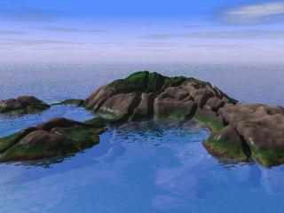
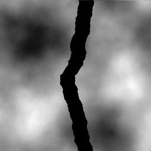

| |
Ce bouton remet la dénivellation à
0 instantanément. La plupart du temps, il n'y a pas de
dénivellation entre les deux côtés d'une crevasse
ou d'une fissure. |
| |
Cette échelle contrôle la
séparation des murs de la crevasse. Lorsqu'une ligne de
contrôle est active, les murs s'élargiront devant vos yeux. |
 |
Cette option active l'acceptation automatique de
la ligne de contrôle courante, dès que l'on clique
ailleurs dans l'image pour dessiner une nouvelle ligne de
contrôle. La racine est rafraîchie, pour que la nouvelle
ligne brisée soit différente. C'est utile pour dessiner
efficacement un réseau de fissures. |
| Direction de la séparation |
Lorsque la pente de la ligne est près de
45°, il est préférable d'éviter les cas 5 et
6, parce que la séparation a l'air inégale. |
En pivotant la ligne de contrôle afin
qu'elle coupe un coin, la séparation est plus homogène! |
| 1. Création de l'image de relief Créez un nouveau terrain standard.
Dans cet exemple, la scène par défaut de la subdivision #2 a été utilisée. |
|
| 2. Diminution du contraste pour adoucir le
terrain Il s'agit de récifs
polis. Ici, le contraste a été diminué pour
limiter la hauteur du terrain.
La hauteur minimale du terrain devra être de 0 pour s'ajuster au plancher océanique. Pour cela, on désactive "Conserver la luminosité" avant d'appliquer la variation de contraste. Une autre façon de procéder aurait été de diminuer l'échelle du terrain dans Povray sur l'axe Y. Cependant, l'effet du changement n'aurait pas pu être vu dans l'aperçu de Geomorph. |
 |
| 3. Formation d'une île
(abaissement des côtés) |
  |
| 4. Choix de la position de la
caméra C'est le temps de choisir la scène Povray sea_and_rocks.pov afin d'ajuster le terrain au plan d'eau, en cliquant sur l'icône en haut de la boîte à outils. La caméra a été abaissée et pivotée afin que les récifs couvrent la majeure partie de l'image et que la ligne d'horizon se trouve environ au tiers supérieur de l'image.  object {hf translate y*0 texture {shore_granite translate y*0 scale 0.25 } } Augmentez 0.25 jusqu'à ce que le cycle disparaisse. |
|
| 5. Création de fissures à
répétition Avant de commencer cette étape, sauvegardez votre terrain! Ramenez la dénivellation à 0. Choisissez une largeur de 1 pixel. Assurez-vous que l'option "Acceptation et rafraîchissement auto" est active, autrement vous dessinerez toujours la même fissure. Enfin, dégainez votre souris et tirez dans tous les sens! |
  |
| 1. La façon "normale": avec
le paramètre "séparation" du crayon de failles. |
 |
| 2. En créant deux failles semblables,
parallèles mais de dénivellations inversées. Cette technique a pour avantage de permettre la création d'une crevasse dont les murs ne sont pas parallèles. Cependant, il ne s'agit pas réellement d'une faille séparée en deux, mais plutôt d'un affaissement brusque et étroit. Vous remarquerez que la texture du terrain est visible dans le fond de la crevasse. Vous pourriez toujours l'éliminer en diminuant la luminosité de l'image. Voici en gros comment procéder:
|
 |
| 3. En creusant la crevasse avec un
crayon fractal - version à pente verticale. Ici, la crevasse est simulée par une "vallée" aux murs abrupts. En utilisant le crayon fractal plutôt que le crayon continu, les bords restent irréguliers, même lorsque le mur est vertical. Le niveau du crayon est réglé à 100% afin d'obtenir une dénivellation maximale. L'option "creuser une vallée" doit être choisie. C'est avec le filtre de forme qu'on ajuste la verticalité des murs. La "cloche gaussienne avec choix de paramètres" a été choisie pour un meilleur contrôle. |

|
| 3b. En creusant la crevasse avec un crayon
fractal - version à pente moyenne Pour obtenir une pente moins raide, dans cet exemple, le niveau a été réduit de 100% à environ 50% et un filtre de forme plus étroit a été choisi. Le relief a été réglé à 1 plutôt que 0 afin d'augmenter l'irrégularité des murs. L'espacement a été réduit à 15%. Autrement, le fond de la vallée était trop irrégulier. |
 |
 Retour à l'index de la
documentation
Retour à l'index de la
documentation